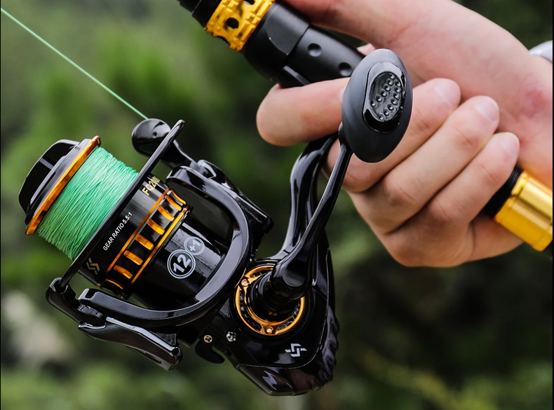
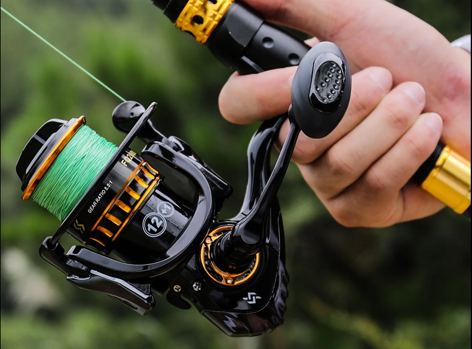
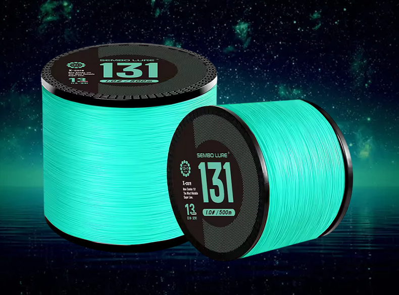
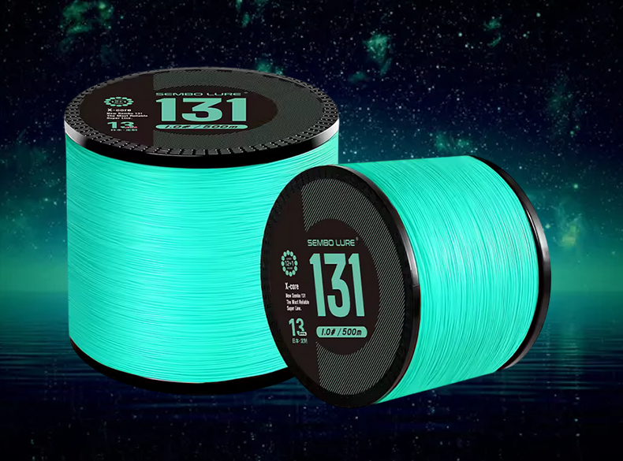

Linterna UV KINGDOM
Linterna UV KINGDOM
 Sedal Trenzado de 9 hebras

Carrete Pesca Sougayilang RATIO 5.1:1
Sedal Trenzado de 9 hebras

Carrete Pesca Sougayilang RATIO 5.1:1
 Caña pescar Phishger

ZUKIBO Sembo-sedal de pesca trenzado de 13 hebras
Caña pescar Phishger

ZUKIBO Sembo-sedal de pesca trenzado de 13 hebras
En Egis Low Cost encontrarás una selección de componentes y accesorios diseñados para mejorar tus jornadas de pesca. Nuestro catálogo incluye herramientas y complementos esenciales, todos seleccionados por su excelente relación calidad-precio.
Las linternas UV mejoran la visibilidad de señuelos luminiscentes, el sedal trenzado aporta resistencia y sensibilidad, y los carretes con múltiples rodamientos aseguran una recogida suave, ideal tanto para eging como para pesca ligera.
Actualizamos esta sección regularmente para ofrecer productos útiles y accesibles, perfectos tanto para pescadores principiantes como para quienes buscan mejorar su equipo sin gastar de más.